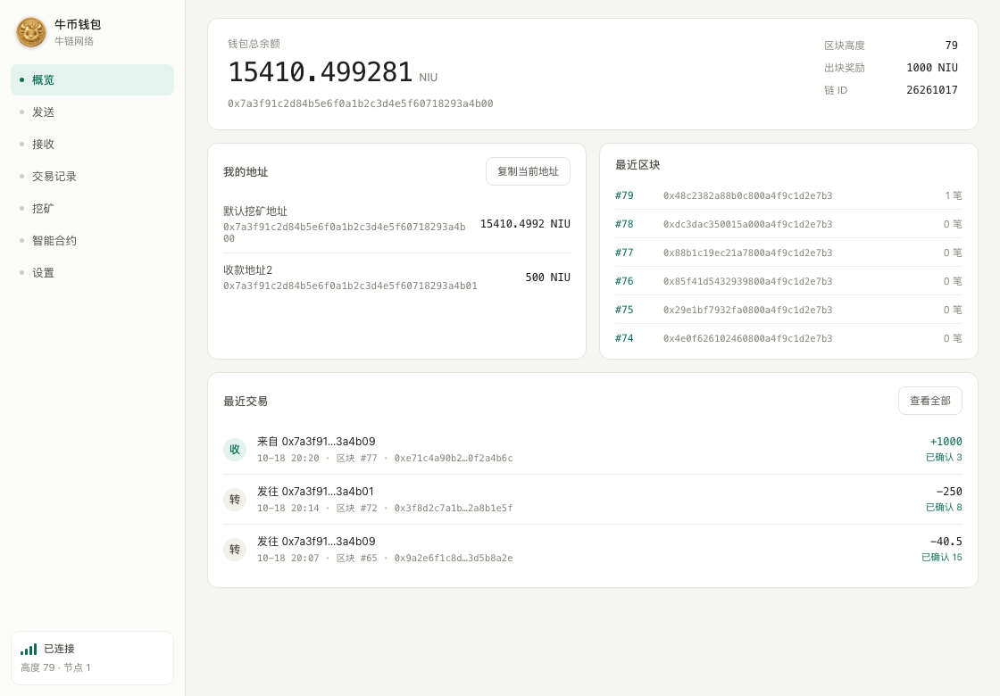
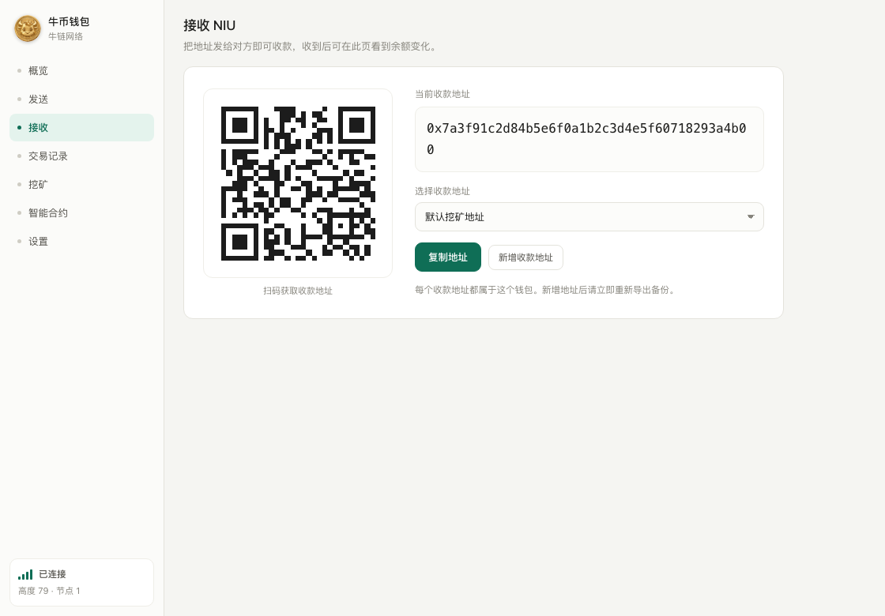
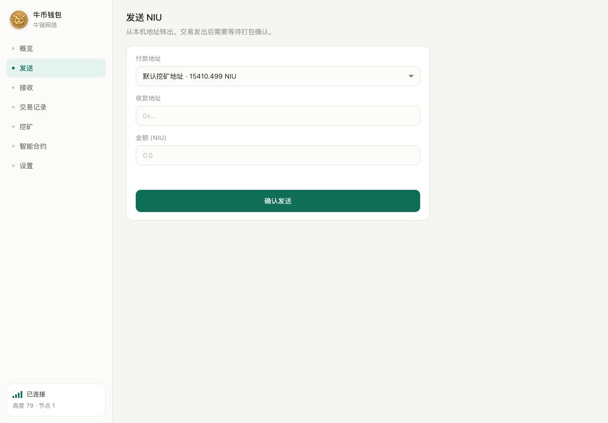
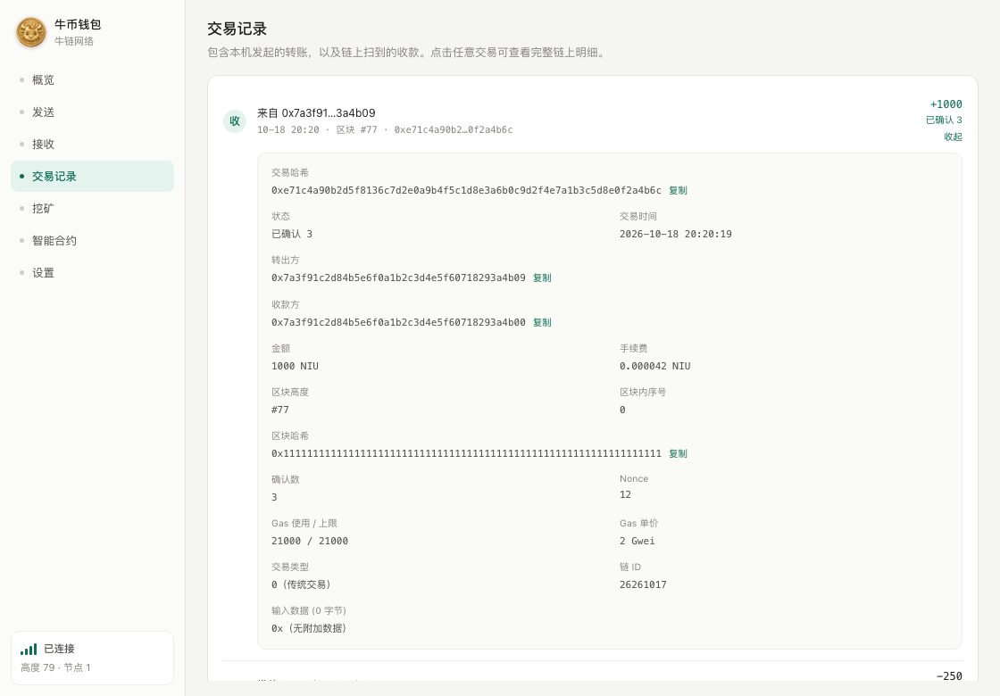
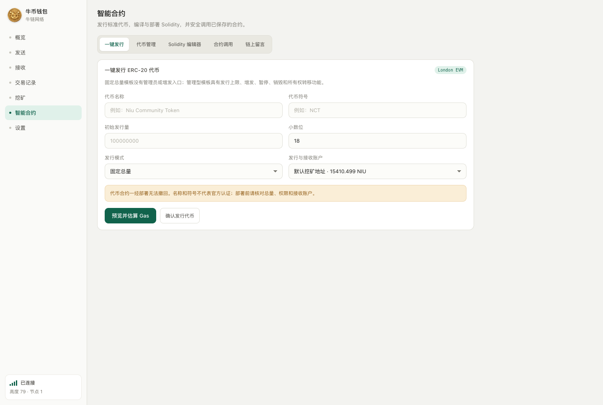
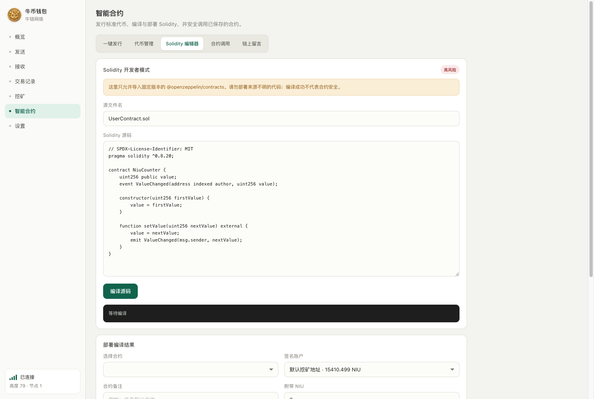
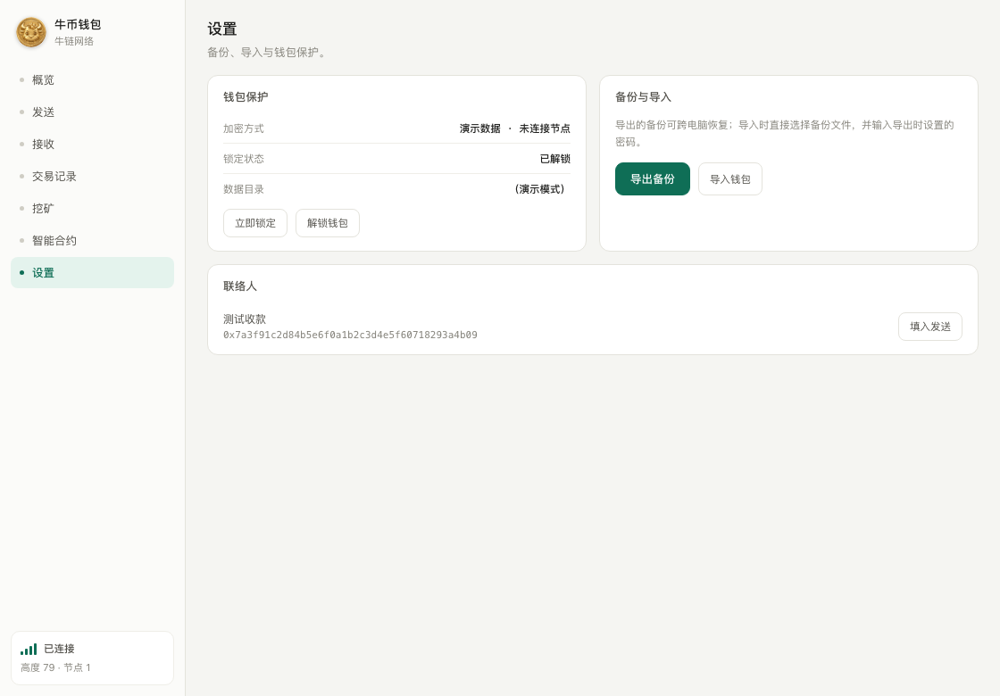

钱包基本操作Core wallet
概览查看总余额、区块高度与节点连接状态；选择付款地址发送 NIU；接收页生成地址二维码；交易记录可展开完整链上字段。Overview shows balance, block height and node status. Send NIU from a chosen address, receive with a QR code, and expand full on-chain fields for any transaction.
v0.3.10 2026-10-22 发布Released 2026-10-22 GPL-3.0 开源GPL-3.0 open source
Windows x64 与 macOS Apple Silicon 双端使用同一套 Electron 界面与钱包业务代码，接入同一条 Ethash PoW + London EVM 独立网络。节点、钱包、合约模板与测试全部公开在 GitHub。 Windows x64 and macOS Apple Silicon share one Electron interface and one wallet codebase, both connected to the same standalone Ethash PoW + London EVM network. The node, wallet, contract templates and tests are all public on GitHub.
⚠ 当前版本未经独立第三方安全审计，Windows 包未做商业代码签名，macOS 包仅临时签名。请先阅读安全状态。 ⚠ Not independently security-audited. The Windows build is unsigned and the macOS build is ad-hoc signed only. Read the security status first.

概览页截图使用公开演示数据，不含真实地址与余额。Screenshot uses public demo data, no real addresses or balances.
以下均为 v0.3.10 已实现并通过自动化回归测试的功能，不含路线图承诺。Everything below ships in v0.3.10 and passes automated regression tests. Nothing here is a roadmap promise.
概览查看总余额、区块高度与节点连接状态；选择付款地址发送 NIU；接收页生成地址二维码；交易记录可展开完整链上字段。Overview shows balance, block height and node status. Send NIU from a chosen address, receive with a QR code, and expand full on-chain fields for any transaction.
一键发行固定总量或带上限的管理型 ERC-20，支持导入、查看余额和转账。交易列表自动解析 transfer / transferFrom 的真实数量与符号。Issue a fixed-supply or capped managed ERC-20 in one click, then import, check balances and transfer. The transaction list resolves real amounts and symbols from transfer / transferFrom.
在钱包内编辑、编译 London EVM 合约、估算 Gas 并部署，支持导入 ABI 对已保存合约执行只读或签名写入调用。Edit, compile for London EVM, estimate Gas and deploy from inside the wallet. Import an ABI to run read calls or signed writes on saved contracts.
在钱包中主动开启或停止 Ethash 挖矿，实时查看出块与算力状态。难度沿用 EIP-100 形状、42 秒时间桶并禁用难度炸弹。Start or stop Ethash mining from the wallet and watch blocks and hashrate. Difficulty follows the EIP-100 shape with a 42-second bucket and the difficulty bomb disabled.
导出带独立密码的可携带 JSON 备份（ethers V3 keystore，scrypt + AES-128-CTR），导入时明确区分钱包口令与备份密码。项目方无法找回丢失的备份密码。Export a portable JSON backup with its own password (ethers V3 keystore, scrypt + AES-128-CTR). Import distinguishes the wallet passphrase from the backup password. Lost backup passwords cannot be recovered by anyone else.
简体中文、English、日本語、한국어、Español、Русский。macOS 与 Windows 共用同一实现与同一套文案。Simplified Chinese, English, Japanese, Korean, Spanish and Russian. macOS and Windows share one implementation and one string set.
| 网络名称Network name | 牛链网络（NIU）NIU Network |
|---|---|
| Chain ID / Network ID | |
| 创世哈希Genesis hash | |
| 初始区块奖励Initial block reward | 1000 NIU |
| 减半周期Halving interval | 每 1,050,000 个区块every 1,050,000 blocks |
| 小数位Decimals | 18 |
| 叔块Uncles | 无叔块及叔块奖励none, no uncle reward |
| 创世分配Genesis allocation | 零预挖分配zero pre-mine |
| EVM | London / Solidity |
| 节点基线Node baseline | Core-Geth v1.12.23 |
节点起始提交 96b2afc25c7023bb500d14e8ed69455339b1ca90，保留上游版权与许可证。Node starts from commit 96b2afc25c7023bb500d14e8ed69455339b1ca90, retaining upstream copyright and license.
v0.3.10 实际截图。全部使用公开演示数据生成，不包含真实用户地址、余额或备份资料。Real v0.3.10 screenshots, generated with public demo data — no real addresses, balances or backup material.






当前版本未经独立第三方安全审计，不适合存放无法承受损失的资产。程序更新、系统故障、密码遗失、恶意软件和错误网络配置都可能造成资产无法使用。请保留多份离线备份，并先用小额测试恢复流程。This version has not been independently audited and is not suitable for assets you cannot afford to lose. App updates, system failures, lost passwords, malware and wrong network settings can all make funds unusable. Keep multiple offline backups and test recovery with a small amount first.
Transfer 日志；链上名称、符号和精度属于合约自报元数据，无法验证时在界面明确标记，不伪装成已验证代币。ERC-20 display checks both standard calldata and confirmed Transfer logs. On-chain name, symbol and decimals are contract-supplied metadata, marked explicitly when unverifiable rather than presented as verified.sprintf-js 中危记录，当前依赖链没有可直接升级的已修复版本。Build dependencies still carry one medium sprintf-js advisory with no directly upgradable fixed version in the current dependency chain.Windows 本机钱包文件由 DPAPI CurrentUser 保护；macOS 使用 AES-256-GCM，主密钥保存在当前用户钥匙串。钱包口令是应用内门禁，不能抵御已经完全控制该系统账户、钥匙串或进程的攻击者。离开电脑时仍应锁定系统并保持操作系统更新。On Windows the local wallet file is protected by DPAPI CurrentUser; on macOS it uses AES-256-GCM with the key held in the current user's Keychain. The wallet passphrase is an in-app gate — it does not defend an attacker who already controls the OS account, Keychain or process. Lock your machine when you step away and keep the OS updated.
扫描结果只能证明已知规则下未发现对应问题，不能证明不存在未知漏洞。源码公开、自动化测试和依赖扫描均不构成第三方安全背书。完整说明见仓库 SECURITY.md。Scan results only prove that no matching issue was found under known rules; they cannot prove unknown vulnerabilities are absent. Public source, automated tests and dependency scans are not third-party assurance. Full statement in the repo's SECURITY.md.
安装包直接托管在 GitHub Releases，本站不中转任何二进制文件。下载后请用同一页面的 .sha256 文件核对。Installers are hosted on GitHub Releases only — this site never mirrors binaries. Verify each download against its .sha256 file on the same page.
未做商业代码签名。首次运行 Windows SmartScreen 可能提示「未知发布者」。Not commercially code-signed. SmartScreen may warn "unknown publisher" on first run.
仅临时签名（ad-hoc），未使用 Apple Developer ID，未完成 Apple 公证。首次启动若被拦截，请在 Finder 中右键应用并选择「打开」。Ad-hoc signed only — no Apple Developer ID, no notarization. If macOS blocks first launch, right-click the app in Finder and choose Open.
Windows PowerShell：Windows PowerShell:
Get-FileHash .\NIU-Wallet-v0.3.10-Windows-x64.zip -Algorithm SHA256macOS / Linux 终端：macOS / Linux terminal:
shasum -a 256 NIU-Wallet-v0.3.10-macOS-arm64.dmg输出应与上方哈希一致。macOS 校验文件中的路径前缀为 dist-desktop/，属发布脚本产物，文件名部分一致即可。The output must match the hash above. The macOS checksum file carries a dist-desktop/ path prefix from the release script; match it by filename.
历史版本与完整发布说明见 Releases 页面（v0.3.9 · v0.3.8 · v0.3.10）。Older builds and full release notes are on the Releases page (v0.3.8 · v0.3.9 · v0.3.10).
钱包、定制节点、合约模板、构建脚本与安全测试证据全部在一个公开仓库里，以 GPL-3.0 授权。桌面端使用 Electron，节点基于 Core-Geth v1.12.23 定制。The wallet, the custom node, contract templates, build scripts and security-test evidence all live in one public repository under GPL-3.0. The desktop app is Electron; the node is a customized Core-Geth v1.12.23.
谨防仿冒：本项目只有 github.com/yuanhong792/niu-wallet 一个源码仓库，安装包只从该仓库的 Releases 下载。任何索要私钥、助记词或要求「转账解锁」的都是诈骗。Beware of fakes: github.com/yuanhong792/niu-wallet is the only source repository and its Releases page is the only download location. Anyone asking for your private key, seed phrase, or a "transfer to unlock" is running a scam.